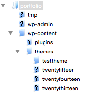
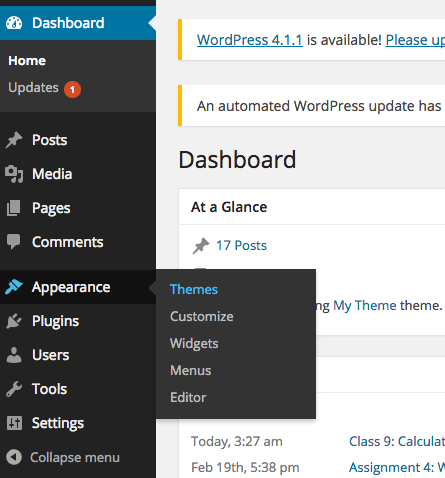
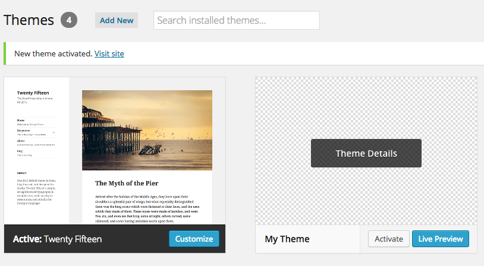

We’re going to start building out the basics of our WordPress theme starting with a template with two files: index.php and style.css. This is the minimum requirement for a WordPress theme to be installed.
To get started download the theme starter files here. We’re going to take index.html and convert it into php and talk about some basic php concepts as we do it. We’ll add a few things to style.css and then test it on our WP installs.
Let’s start with the <head> section and the beginning of the document.
<head>
<meta charset="UTF-8">
<meta name="viewport" content="width=device-width, initial-scale=1.0" />
<title>Theme Starter Files</title>
<link rel="stylesheet" href="wp-content/themes/mytheme/style.css">
</head>Most of this will stay the same, but we need to change two lines.
First is the <title>. WordPress themes should be customizable, so we will begin replacing default or hard coded content with php variables that are provided by WordPress.
<title>
<?php bloginfo('name'); ?> | <?php bloginfo('description'); ?>
</title>
The first php tag uses the bloginfo() function to retrieve the blog name. We’ll talk about functions in depth next week. The second line uses the same function to retreive the blog description, which is a reference to the tagline from the Dashboard settings.
By using php variable, we can get those pieces of information, filled in by the user or by us, at any part of our website.
Next change the CSS link tag:
<link rel="stylesheet" type="text/css" href="<?php bloginfo('stylesheet_url'); ?>" >Again we’re using the bloginfo() function, this time to get the URL location of the stylesheet. Because WP uses a more complex file structure than a static website, its a good idea to use this references instead of a direct URL. Note that php can be used inside of quotes as an attribute value as well.
<?php wp_head(); ?>This is going to load some WordPress stuff into the head of the website.
We’re going to skip the <header> and <nav> for now, we’ll cover those in depth in the next lesson.
Skip ahead to this section:
<div class="posts">
<article class="post">
<header>
<h2 class="entry-title"><a href="permalink_to_title">The Title of the Post</a></h2>
</header>
<div class="content">
<p>
the_content() of the post goes here
</p>
</div>We’re going to add a few lines and make some changes here.
First add this line, called the WP Loop. We’ll cover this in depth soon. The important thing to know now is that this does most of the work of going through all of your posts or pages and grabbing the content from the database.
<div class="posts">
<?php if ( have_posts() ) : while ( have_posts() ) : the_post(); ?>
<article class="post">Next, replace all of <a href="permalink_to_title">The Title of the Post</a> with the following:
<h2 class="entry-title">
<a href="<?php the_permalink(); ?>">
<?php the_title(); ?>
</a>
</h2>These lines are using functions to get the link to each post and the title of the post. You should start to see a pattern emerging.
Next, replace the entire section <div id="content"> ... </div> with this line:
<?php the_content(); ?>Next replace the line <p class="entry-meta"> ... </p> with this:
<p class="entry-meta">
Post on <?php the_date(); ?> by <span class="author"> <?php the_author(); ?> </span>
</p>That will add the author of the website and date of each post.
Finally, delete the entire second <article>. With WordPress working, we only have to make a single template for each post, which will be populated with new content.
Then, after the <article> section, before the end of the <div id="content"> section, add the following:
<?php endwhile; else: ?>
<p><?php _e('Sorry, no posts match your criteria.'); ?></p>
<?php endif; ?>This tells WordPress to do once it’s loaded all of the blog posts or there are no blog posts to load.
Let’s change a couple of things in the <footer>:
<footer>
<p class="copyright">© 2014</p>
<p class="webdesigner">website by Your Name</p>
</footer>Add the current date and author to this section:
<footer>
<p class="copyright">& copy; <?php the_date(Y); ?></p>
<p class="webdesigner">website by <?php the_author(); ?></p>
</footer>That’s it for index.php today.
Let’s edit style.css and then test our theme.
Replace Theme Name, Author and Description with you own information, and delete everything else:
/*
Theme Name:
Author:
Description:
*/Right now this is all you will see in style.css. In order for WordPress to recognize the theme, it needs to have this comment with this basic information. Go ahead and replace the info for Theme Name, Author and Description with your own information.
Now let’s upload these themes and test them out.
Open FileZilla and find your WordPress instance. Navigate from root folder to wp-content > themes and add your theme folder:
Your theme should just consist of index.php and style.css. Once it’s uploaded, you should the theme in the WordPress Dashboard in Appearance > Themes.
From here, click Activate to see your theme in action:
